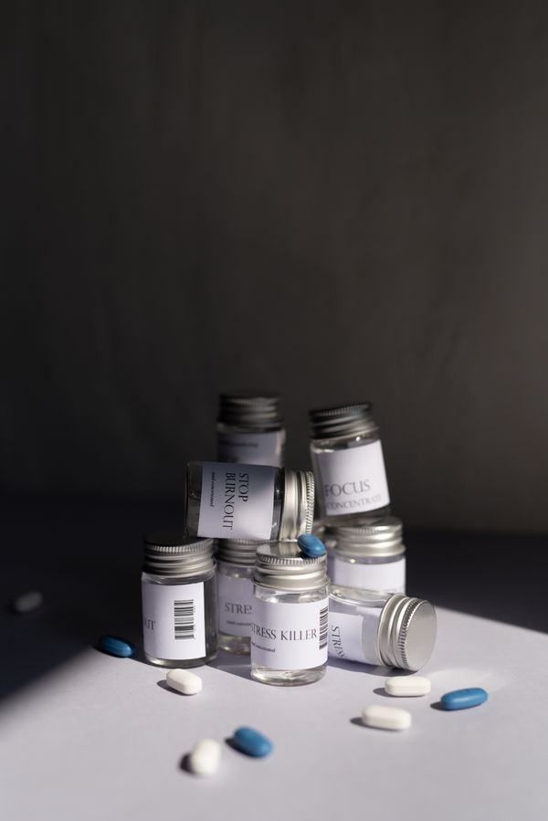
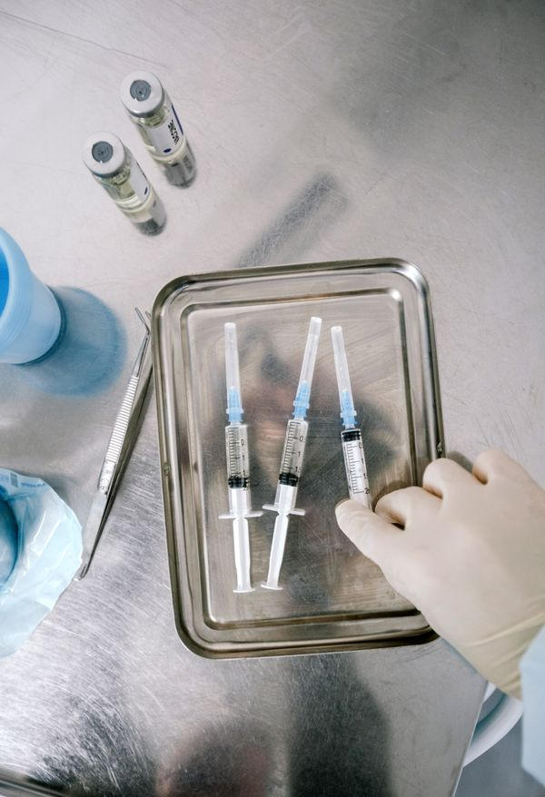
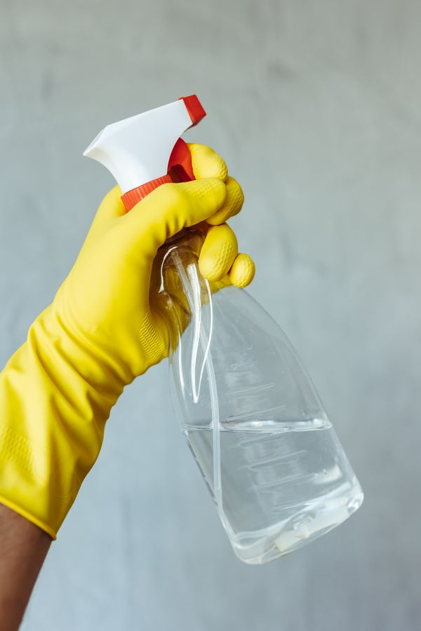

مجموعة متكاملة تغطي احتياجات مزرعتك
نوفر كل ما يلزم قطاع الدواجن من الدواء والعلاج، مروراً باللقاحات والأعلاف، وحتى التعقيم الشامل ومستلزمات العنابر.
أدوية بيطرية متخصصة
مضادات حيوية ومضادات كوكسيديا ومسكنات ومضادات التهاب متطورة لعلاج أمراض الدواجن الشائعة والتنفسية والمعوية، باختيار دقيق ومدروس يناسب عمر القطيع والحالة الوبائية.
استعرض قائمة الأدوية المتوفرة

لقاحات وبرامج تحصين وقائية
برامج تحصين متكاملة تحمي القطيع من الأمراض الفيروسية والموسمية الخطيرة مثل النيوكاسل والجمبورو والآي بي وإنفلونزا الطيور، محفوظة في ثلاجات تبريد ذات مراقبة حرارية مستمرة على مدار الساعة.
اطلب جدول وبرامج التحصينأعلاف ومكملات غذائية وفيتامينات
فيتامينات أ، د، هـ، وأحماض أمينية، وأملاح معدنية ومضادات إجهاد حراري تعزز المناعة وترفع كفاءة تحويل العلف لتحقيق أعلى أوزان في أقل وقت ممكن.
اطلع على المكملات والأعلاف

مطهرات ومستلزمات الأمن الحيوي للعنابر
منتجات تطهير وتعقيم بيطرية متقدمة للتخلص من البكتيريا والفيروسات بين الدورات، بالإضافة إلى مستلزمات الشفاطات، وخلايا التبريد، والفرشة، وأدوات قياس الحرارة والرطوبة لضمان بيئة آمنة للقطيع.
تصفح مستلزمات العنابر والتطهير